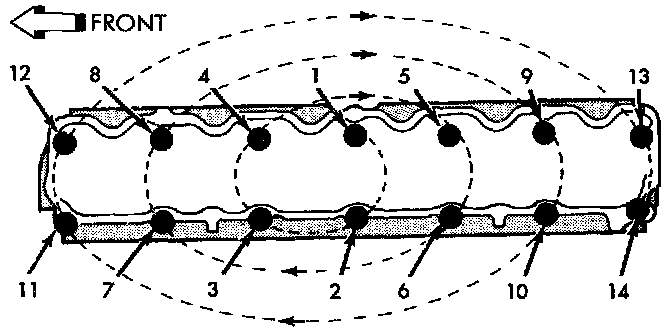

Cylinder Head Assembly: Specifications
CYLINDER HEAD BOLT TORQUE/SEQUENCE
CAUTION: During the final tightening sequence, bolt No.11 will be tightened to a lower torque than the rest of the bolts. DO NOT overtighten bolt No.11.
- Tighten all bolts in sequence (1 through 14) to 30 Nm (22 ft. lbs.) torque.
- Tighten all bolts in sequence (1 through 14) to 61 Nm (45 ft. lbs.) torque.
- Check all bolts to verify they are set to 61 Nm (45 ft. lbs.) torque.
- Tighten bolts in sequence:
- Bolts l through 10 to 149 Nm (110 ft. lbs.) torque.
- Bolt 11 to 13 Nm (100 ft. lbs.) torque.
- Bolts 12 through 14 to 149 Nm (110 ft. lbs.).
CYLINDER HEAD SURFACE VARIATION
Maximum Allowable Surface Variation .008"
Use a straightedge and feeler gauge to check the flatness of the engine cylinder head and block mating surfaces.
CYLINDER HEAD BOLT RE-USABILITY
The Cylinder head bolts should be examined BEFORE reuse. If the threads are necked down, the bolts should be replaced. Necking can be checked by holding a scale or straight edge against the threads. If all the threads do not contact the scale the bolt should be replaced.
CAMSHAFT GEAR/SPROCKET SPECIFICATIONS
Camshaft Sprocket Bolt 108 Nm (80 ft. lbs.)
INTAKE/EXHAUST MANIFOLD TORQUE/SEQUENCE

Tighten the fasteners in sequence and to the specified torque.
^ Fastener Numbers 1 through 5, Tighten to 33 Nm (24 ft. lbs.) torque.
^ Fastener Numbers 6 and 7, Tighten to 31 Nm (23 ft. lbs.) torque.
^ Fastener Numbers 8 through 11, Tighten to 33 Nm (24 ft. lbs.) torque.